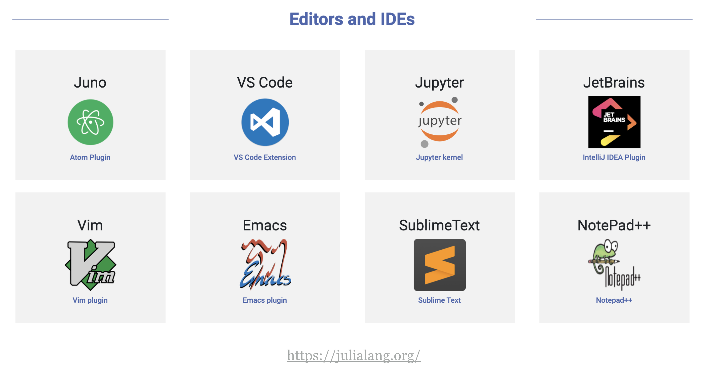

1: Getting started with Julia
ISCB 2022 Madison
Why Julia?
From the creators of Julia
“We want a language that is
- open source
- with the speed of C
- obvious, familiar mathematical notation like Matlab
- as usable for general programming as Python
- as easy for statistics as R
- as natural for string processing as Perl
- as powerful for linear algebra as Matlab
- as good at gluing programs together as the shell
- dirt simple to learn, yet keeps the most serious hackers happy”
Reasons to try Julia
- Comparison with other languages: Julia touts its speed edge over Python and R
- Used for large-scale projects like CliMA 0.1: a first milestone in the next generation of climate models
- Julia adoption accelerated at a rapid pace in 2020:
The five stages of programming
- Use the REPL as a sophisticated calculator
- Realize that you are repeating many operations, so you decide to write some functions
- To organize all your functions, you begin scripting
- You want to share your code with others and thus, you want to write a package
- Your package is actually used by others and thus, it should be optimized and have good performance
Julia offers many advantages to data science programmers such as avoid the two-language problem and existing tools that allows programmers to write efficient code without having to write everything from scratch!
Workshop topics
In this workshop, we will focus on three main topics:
- Data tools:
Arrow.jl,Tables.jl,DataFrames.jl - Model fitting:
MixedModels.jl - Package system and important packages for Data Science:
- interoperability with R and python (RCall.jl and PyCall.jl),
- literate programming (quarto.org and Pluto.jl),
- plotting (Makie ecosystem)
In addition, we will have an hands-on exercise in which participants will bring a dataset of their choice along with an existing script in another language like R or python with a specific data analysis. Assisted by the presenters, they will work during the tutorial to convert the code to Julia language.
The Julia REPL
Let’s start by looking at the REPL and try:
;to open shell mode$to open R mode (afterusing RCall)]to open package mode: trystatus?to open help mode\beta+TABfor math symbols<backspace>return to Julia mode
Setting up your project folder
How do I write code?

Installing dependencies in a project environment
There are two alternatives:
- Using an existing project with dependencies already in
Project.toml(this will be the case when you are collaborating with someone that already set up the project dependencies) - Set up the dependencies for your project on your own (this will be the case if your project is new)
For this workshop, participants will use the workshop GitHub repository as the existing project that already has all the dependencies. However, we also show the steps below to create a new project from scratch.
1. Working on an existing project environment
Git clone the repository:
git clone https://github.com/crsl4/julia-workshop.gitOpen julia and activate the package with:
julia --projectAlternatively, you can open julia normally, and type ] activate .
Then, instantiate the package (install dependencies) in the package mode ]:
(julia-workshop) pkg> instantiate
(julia-workshop) pkg> updateNow, you should be able to follow along the workshop commands. Trouble-shooting might be needed when we reach the interoperability with Python and R as certain libraries or packages might need to be installed too.
2. Creating a new project environment
Create a folder in the terminal:
mkdir myProject
cd myProjectOpen Julia inside your folder, and activate your environment with:
(@v1.8) pkg> activate .Install the packages that we need. For example, the packages needed for today’s workshop are:
julia> ENV["PYTHON"] = ""
(myproject) pkg> add PyCall
(myproject) pkg> add IJulia
(myproject) pkg> build IJulia
(myproject) pkg> add MixedModels
(myproject) pkg> add RCall
(myproject) pkg> add Arrow
(myproject) pkg> add DataFrames
(myproject) pkg> add Tables
(myproject) pkg> add RangeTreesNote: This will create a whole new conda environment, so it will take up space in memory.
Two files are noteworthy:
Project.toml: Defines projectManifest.toml: Contains exact list of project dependencies
shell> head Project.toml
[deps]
Arrow = "69666777-d1a9-59fb-9406-91d4454c9d45"
DataFrames = "a93c6f00-e57d-5684-b7b6-d8193f3e46c0"
IJulia = "7073ff75-c697-5162-941a-fcdaad2a7d2a"
MixedModels = "ff71e718-51f3-5ec2-a782-8ffcbfa3c316"
PyCall = "438e738f-606a-5dbb-bf0a-cddfbfd45ab0"
RCall = "6f49c342-dc21-5d91-9882-a32aef131414"
Tables = "bd369af6-aec1-5ad0-b16a-f7cc5008161c"
shell> head Manifest.toml
# This file is machine-generated - editing it directly is not advised
julia_version = "1.8.0-beta3"
manifest_format = "2.0"
project_hash = "01baf737705b090869a607b779c699f83bbeb154"
[[deps.ArgTools]]
uuid = "0dad84c5-d112-42e6-8d28-ef12dabb789f"
version = "1.1.1"Look at your Project.toml and Manifest.toml files after installation. They have all the necessary information about your session.
The packages have a uuid string which is the universally unique identifier.
More on the Project.toml and Manifest.toml files here.
Editing julia code
There are many ways to work on julia code depending on the editor. We will focus today on VSCode.
Download VSCode here
Install the Julia extension and the Quarto extension in VSCode
Open the project with:
cd julia-workshop
code .You need to have the code command in your PATH which can be done within VSCode searching in the Command Palette “shell command”.
Alternatively, you can open a specific qmd file in your editor of choice:
cd julia-workshop
open session2a-tables-and-arrow.qmdIf you open a given file, make sure to activate the project ] activate . or you will be working on the global environment.
Note that jupyter notebooks ipynb are produced when the qmd files when rendered into html.
In addition to qmd files, you can work with standard .jl julia files.